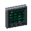
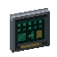
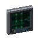
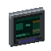
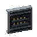
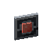
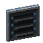
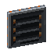
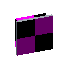

Reference: pages
Reference
Part Host
encodedlogistics:part_host · Block (no item)
Internal block, with no item: it holds a cable part mounted straight onto the face of a block that isn't a cable, when there's no cable in front of that face. You never place it yourself: use a part on a block face and the mod places it. The part is on the network only when the block it's mounted on is a network block.
Works with

Access Terminal
Fabrication Terminal
Schematic Terminal
Schematic Encoder Ingress Port
Ingress Port Egress Port
Egress Port
Inventory Tap
Threshold Sensor
Collector Plane
Deployer Plane Point-to-Point Link
Point-to-Point Link
Trunk Port
How to get it
No recipe makes it.
Used to make
Nothing.
As a block
| Hardness | 0.5 |
|---|---|
| Blast resistance | 1 |
| Tool | any |
| Light level | 0 in its default state |
Where it's documented
- Cables (Networks)